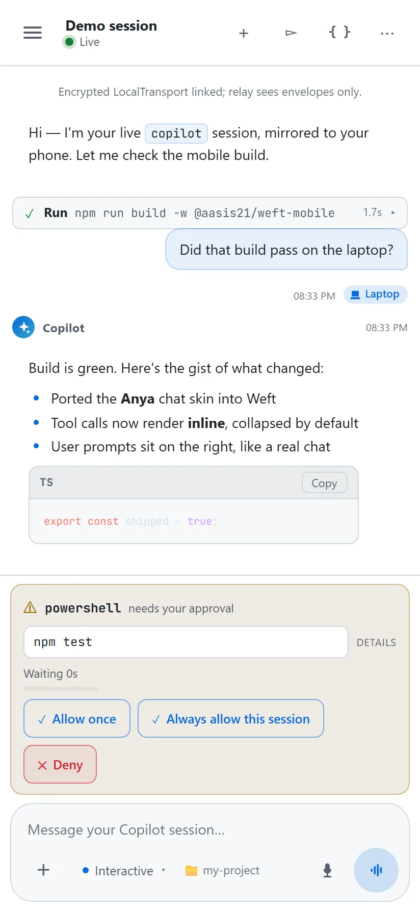

Weft documentation
From your terminal
to your phone.
Install Weft, connect a phone, and work with GitHub Copilot CLI sessions running on your laptop.
The Device Station runs on the laptop. The web app runs on your phone. Weft relays prompts, session activity, and native permission requests between them over an end-to-end encrypted connection.
Looking for the app? Open useweft.netlify.app for the product homepage and phone experience. This site is the documentation; it does not connect to your sessions.
Requirements
- Laptop
- Windows with PowerShell, or macOS / Linux with a shell and
curl. Install and sign in to GitHub Copilot CLI with an account that can use it. Confirmcopilotruns in your terminal. - Runtime
- Node.js 20 or newer available on your laptop. The prebuilt installer needs no repository clone or local npm build. Development from source also requires npm.
- Phone
- A current browser with JavaScript, Web Crypto, and browser storage. Open the HTTPS web app and allow camera access to scan. Manual paste is available on keyboard-and-mouse devices, not touch-only phones.
- Connection
- Both devices must reach the chosen relay. They do not have to share Wi-Fi. Keep the laptop awake and the Device Station terminal open.
- Optional
- Install the PWA through your browser for a home-screen shortcut. A Microsoft Dev Tunnel requires the
devtunnelCLI and an account; self-hosted Supabase requires your own project.
The hosted PWA is the supported phone distribution. Weft does not currently publish an Android APK. Android Studio is needed only for developing the native shell.
Quickstart
Run the commands on your laptop, then open the app on your phone. The installer configures the hosted Supabase relay; no relay account or key entry is needed.
1. Install on your laptop
These commands download and execute an installer. Review the PowerShell installer or shell installer first if your environment requires it.
irm https://useweft.netlify.app/install.ps1 | iexcurl -fsSL https://useweft.netlify.app/install.sh | bashcurl -fsSL https://useweft.netlify.app/install.sh | bashThe installer puts code in ~/.copilot/extensions/weft/ and the usage skill in ~/.copilot/skills/weft-how-to-use/. Your configuration and pairing material live separately in ~/.weft/. On Windows, ~ means your user profile directory.
2. Start the Device Station
weft startLeave this terminal open. The station prints a pairing QR. If weft is not found, open a new terminal after installation and see troubleshooting.
3. Pair from your phone
- Open useweft.netlify.app and choose Scan QR to pair.
- Allow camera access and scan the laptop QR. If scanning is unavailable, check the browser's camera permissions. Keep the QR and its text payload private.
- Select the connected device, then start or resume a session. Register a project if you want to choose a working directory.
Use the browser's Install app or Add to Home Screen action for an app-like experience. You can also read the app installation instructions.
Pairing a replacement phone? If a phone was already trusted, or browser/app storage was cleared, stop the old station and run weft start --new-device instead.
Pairing & recovery
A pairing QR grants access to your laptop's Weft connection. The unclaimed grant expires after 10 minutes and binds to the first successfully paired phone key. Keep it private, including any copied text version.
Reconnect the same phone
Device Station pairing is persistent by default. Run weft start again and reopen the app in the same browser profile or installed PWA. An already-paired phone can reconnect after the QR's initial grant has expired because it retains its trusted identity.
A QR that has already been claimed is not an invitation for a second phone. Browser data deletion, a different browser profile, or switching to another app installation can mean the phone no longer has its original key.
New phone or cleared browser storage
- Stop the running Device Station with Ctrl + C.
- Start it with the explicit replacement option:
weft start --new-deviceScan the fresh QR from the new phone or browser. This replaces the previously trusted phone identity; the old pairing will no longer reconnect. It does not restore a transcript deleted from phone storage.
weft start --rotate-pairing is an alias for --new-device. With ephemeral pairing enabled, each start already uses a fresh identity.
Choose the pairing lifetime
| Mode | Command | Behavior |
|---|---|---|
| Persistent | weft set-pairing persistent | Reuse station identity across restarts. This is the default. |
| Ephemeral | weft set-pairing ephemeral | A fresh channel and key each start; scan again each time. |
Mode changes apply to Device Station starts. A /weft pairing inside Copilot is always per-session.
Lost phone or exposed QR
Stop the station, run weft rotate-pairing to invalidate its persistent identity, then run weft start and pair again. Alternatively, weft start --new-device rotates and starts in one command. Stop any old running station first so it cannot continue using its in-memory identity. For a per-session /weft connection, end the old session and establish a new pairing.
Technical detail: pairing handshake reference on GitHub.
Projects & sessions
Register a working directory
Register directories that the phone may use when launching sessions. Choose an existing directory on the laptop; quote paths containing spaces.
weft add-project my-app "C:\Projects\my-app" --default
weft list-projectsweft add-project my-app "$HOME/projects/my-app" --default
weft list-projectsUse weft set-default my-app to change the default later. weft set-name "Work laptop" gives this station a recognizable device label. Removing a registered project removes the registration, not the project's files.
Work with a session
Choose a device and project in the phone app to start a new session or resume an existing one. Send prompts, view streamed activity, and respond to the permission requests that Copilot presents. Pending approvals may block progress until you answer or the session ends.
The session controls can stop a turn or request interactive, plan, or autopilot mode. These rely on the capabilities of the laptop's Copilot host. Switching modes does not give Weft its own permission policy; review each requested action.
If a New or Resume launch is slow, use its Try again action to reconnect to that launch rather than repeatedly creating new sessions. Keep the laptop awake while using the phone.
{kind=link}

{kind=link}
{kind=link}
Mirror one existing Copilot session
Instead of starting a Device Station, enter /weft inside an active Copilot CLI session. Scan its QR to connect only to that session. Its fresh channel and key end with the session. Use /weft supabase or /weft devtunnel for a per-session transport override.
More detail: advanced usage on GitHub.
Command reference
Run weft commands in the laptop shell. Run slash commands only inside Copilot. Use weft help and weft start --help for your installed version's complete usage.
| Command | Purpose |
|---|---|
weft start | Start the Device Station and show a pairing QR. |
weft start --new-device | Replace the trusted phone identity and start with a fresh QR. Disconnects the old pairing. |
weft start --help | Show station options without starting it. |
weft add-project <name> <path> [--default] | Register a directory, optionally as the default. |
weft remove-project <name> | Remove a project registration. |
weft list-projects | List registered projects and the default. |
weft set-default <name> | Choose the default project. |
weft set-name <name> | Set this laptop's display name. |
weft show-name | Show the effective device name and its source. |
weft set-transport <supabase|devtunnel> | Select the relay transport for subsequent starts. |
weft set-transport clear | Remove the explicit transport selection. |
weft show-transport | Show the effective transport and its source. |
weft set-pairing <persistent|ephemeral> | Select the Device Station pairing lifetime. |
weft rotate-pairing | Replace the stored persistent pairing identity. |
weft devtunnel <start|status|stop> | Operate the shared dev-tunnel relay. |
weft version | Print the installed version. |
weft update --check | Check for a newer hosted release without installing. |
weft update | Verify and install the hosted release, preserving local data. |
weft install [--from <dir>] [--skill <file>] | Install local code bundles, optionally from a specified directory and skill file. |
weft clean-install [--yes] | Destructive: delete laptop code and ~/.weft/ data, then reinstall. --yes skips confirmation. Prefer update or pairing recovery instead. |
weft help | Show the full installed CLI usage. |
Angle brackets indicate a required value; square brackets indicate an optional argument. Do not type the brackets. For alternatives separated by |, choose one value.
Transports & hosting
Both transports carry encrypted envelopes between the endpoints. Choosing a different relay changes who operates the infrastructure, not the need to trust and protect your laptop and phone.
Hosted Supabase: the default
The installer seeds hosted relay settings. Run weft set-transport supabase to select them again. You do not need to enter keys in the phone app: the relay URL and client-safe anon key travel in the QR.
Microsoft Dev Tunnel
weft set-transport devtunnel
weft startThe standalone station reuses a healthy relay or provisions one, prompting for devtunnel login when needed. It manages a relay it starts for its own lifetime. It does not shut down a relay owned by another terminal.
For a shared relay that survives individual station restarts, run this in a separate terminal and keep it open:
weft devtunnel startCheck it with weft devtunnel status. weft devtunnel stop stops the shared relay and disrupts connections using it. Unlike weft start, /weft never provisions a relay; start the relay first.
Self-hosted Supabase
- Create a Supabase project and enable Realtime Authorization.
- Apply the repository's Realtime RLS migrations. Private-channel joins fail without the policies.
- Set suitable quotas and rate limits. The current RLS policy gates the
private:weft:*namespace, not individual users. - Configure
~/.weft/supabase.jsonon the laptop with your project URL and client-safe anon key, then runweft set-transport supabaseand restart the station.
{
"url": "https://YOUR_PROJECT.supabase.co",
"anonKey": "YOUR_CLIENT_SAFE_ANON_KEY"
}Never use a service-role key. The phone receives this configuration in the QR. Use only a client-safe anon/publishable key and apply RLS. Do not commit private credentials or pairing material.
The transport choice lives in ~/.weft/weft.config.json; Supabase connection details live in ~/.weft/supabase.json. Switching the transport does not erase those details. Runtime configuration is not read from a project .env file.
Operator details: hosting guide and Supabase configuration on GitHub.
Releases & updates
weft version
weft update --check
weft updateThe check is read-only. The updater stages the bundle set, verifies it against the published SHA-256 manifest, and replaces installed code and the usage skill. It preserves ~/.weft/ configuration, registered projects, logs, and persistent pairing material.
Restart Copilot CLI or Device Station after updating. Web app updates arrive through the browser. Close and reopen the PWA if an older build is still active.
Compare phone and laptop versions
Open Settings > About in the phone app for its build and the version reported by each paired laptop. A mismatch is a useful diagnostic signal, not proof that the protocol is incompatible. Update both ends before investigating further.
GitHub releases · Changelog · Hosted release manifest
No official Android APK is currently distributed. Avoid debug, unversioned, or third-party APKs presented as official releases.
Troubleshooting
Start with weft version, weft update --check, and weft show-transport. Keep the station open and the laptop awake. In the app, open Trouble connecting? and run the connectivity test.
The terminal cannot find weft
Open a new terminal after installing. Confirm Node.js is available with node --version and Copilot with copilot --version. Check that the installer completed successfully and follow its PATH instructions. Re-run the installer if code installation failed; do not delete ~/.weft/ as a first troubleshooting step.
The camera or QR scan does not work
Open the HTTPS app directly in a supported browser, not an embedded preview. Allow camera access in the browser/site settings and retry the scanner. On keyboard-and-mouse devices, you can use the paste-payload option instead. An unclaimed QR expires after 10 minutes. If the QR is expired or already claimed by a different phone identity, use the new-device recovery flow.
The phone stays offline or reconnecting
Confirm the laptop is awake and weft start is still running. Verify the chosen transport with weft show-transport. For a dev tunnel, run weft devtunnel status. Inspect the station's printed error and the phone connectivity result; network policy can block HTTPS/WebSocket connections even when ordinary browsing works.
If you cleared browser data, switched browsers, or replaced the phone, refreshing an old QR will not restore the missing private key. Use weft start --new-device after stopping the old station.
A session or launch appears stuck
Check for a pending permission request in the phone thread or laptop terminal. Weft does not automatically approve it or add a decision timeout. For a slow New / Resume operation, use its Try again action rather than starting duplicates. If mode switching is unsupported by the Copilot host, switch in the terminal or update the host.
No notification while the app is closed
Notification permission and delivery depend on the browser and operating system. Do not rely on a backgrounded or killed app to wake for an approval. Reopen the app to inspect pending requests; keep the laptop terminal available when reliable attention is required.
Report a problem safely
Include phone OS/browser, laptop OS, Copilot and Weft versions, transport, reproduction steps, expected behavior, and sanitized connectivity diagnostics in a GitHub issue.
Do not include QR payloads, pairing keys, tokens, private source, or transcripts. Use the private security reporting instructions for sensitive problems.
Remove Weft or local data
Remove ~/.copilot/extensions/weft/ and ~/.copilot/skills/weft-how-to-use/ to uninstall laptop code. Remove ~/.weft/ only if you also intend to delete configuration, registered projects, logs, and persistent pairing keys.
On the phone, remove a session to delete its cached transcript. Clear site/app data to delete local pairings and history. Uninstalling a PWA shortcut alone may leave browser site data behind. Clearing data is destructive and requires pairing again.
Security & privacy
Weft encrypts session traffic between the paired endpoints using ECDH (P-256), HKDF-SHA256, and AES-256-GCM. The relay forwards ciphertext and stores no session content or key escrow. This does not make the endpoints, the hosted web app, or all metadata untrusted or anonymous.
| Location | What it handles |
|---|---|
| Phone / PWA | Plaintext session content, locally cached transcripts, device/session metadata, preferences, and pairing private keys. Protect access to the device and browser profile. |
| Laptop | Copilot session content and capabilities; installed Weft code; configuration, logs, and persistent identity under ~/.weft/. |
| Relay | Encrypted traffic. Providers can observe connection metadata such as IP addresses, timing, channel identifiers, traffic volume, and operational logs. |
| Web hosting | The app provider delivers code trusted on the phone. The app loads Google Fonts, whose provider may receive request metadata. This documentation uses local assets and system fonts. |
Know the boundaries
- A person who copies an unclaimed QR can race the intended phone to claim it. Keep pairing screens and payloads out of screenshots and issue reports.
- A trusted phone can act through the connected Copilot session. Encryption does not protect against a compromised phone, laptop, or delivered client code.
- Encryption does not guarantee availability. A relay or network can delay, drop, or block traffic.
- Supabase RLS currently gates the Weft namespace, not individual users or channels. A client-safe key is not a secret authentication factor.
- Local transcripts and pairing keys are not a cloud backup. Deleting app storage cannot be undone by reconnecting to the relay.
- Weft relays Copilot's permission requests; it does not replace your organization's policies or make unreviewed actions safe.
Read the technical security model, privacy notice, hosted-service terms, and security reporting policy.
Developer setup
You do not need a source build for normal use. For development, clone the repository and use Node.js 20+ and npm. Shared contracts, the laptop extension, and the phone app are npm workspaces.
git clone https://github.com/aasis21/weft.git
cd weft
npm install --workspaces --include-workspace-root
npm test -w @aasis21/weft-shared
node extension/harness/harness.mjs --auto
npm run build -w @aasis21/weft-extension
npm run build -w @aasis21/weft-mobileThe harness exercises a simulated phone and local transport without a Supabase project. To explore the phone UI locally:
cd mobile
npm run devOpen the printed URL and choose Try the demo. A successful demo does not prove real cross-device pairing or relay connectivity.
Install your source build
From the repository root, run .\setup.ps1 on Windows or ./setup.sh on macOS/Linux. This installs code into your personal Copilot extensions directory. Copilot provides its SDK to the extension at runtime.
Repository map
shared/- Message contracts, pairing, encryption, and transports used by both endpoints.
extension/- Copilot extension, standalone CLI / Device Station, and the local harness.
mobile/- React / Vite phone app and Capacitor development shell. Netlify publishes
mobile/dist. docs/- This static documentation site and deeper Markdown references. No client-side Markdown renderer or app build is required to read the site.
Full procedures: developer setup and deployment guide and contributing guide.
Protocol reference
These concepts help when working on the extension or app. For exact fields and examples, follow the rendered source references below.
Pairing handshake
The QR includes the laptop public key, channel, relay descriptor, pairing grant, and expiry. The phone sends its public key and fresh nonce in pair.hello. The laptop returns a fresh pair.challenge. The phone proves possession of its private key and grant in encrypted pair.proof; the laptop validates that proof and returns an encrypted pair.ack.
ECDH and HKDF derive a challenge-scoped session key. The public handshake values are not secrets; the bearer proof and acknowledgement are encrypted. See the handshake API and exchange diagram.
Event envelope
Application messages share an envelope with eventType, eventSubtype, channelId, sessionId, senderId, senderName, msg, and ts. Message-specific fields stay inside msg.
The secure channel encrypts the complete envelope. An authenticated stream ID and increasing sequence number reject duplicate, stale-stream, and non-monotonic messages. Pairing bootstrap events run before this channel exists. See the event catalog and implementation map.
Runtime modes
The primary session-mode path is session.rpc.mode.set({ mode }). Do not confuse it with session.send(...) delivery mode, which controls queueing rather than interactive / plan / autopilot behavior. Older hosts may not support mode RPC; slash-command fallback is best-effort, not guaranteed.
Plan exit is a separate session-event/UI-RPC approval flow, not an ordinary tool permission callback. The runtime-mode implementation notes include API details and the limits requiring real-host testing.
All guides
Use the handbook links to stay on this site. Source references open the repository's rendered Markdown on GitHub for additional technical detail; they are readable documents, not raw downloads.
| Guide | In this handbook | Source reference |
|---|---|---|
| Setup | Install & connect; develop locally | setup.md on GitHub |
| Advanced use | Sessions; commands | advanced.md on GitHub |
| Pairing | Connect & recover; handshake | pairing.md on GitHub |
| Hosting | Select or operate a relay | hosting.md on GitHub |
| Releases | Update & compare versions | releases.md on GitHub |
| Security | Trust & storage boundaries | security.md on GitHub |
| Modes | Runtime mode switching | mode-switching.md on GitHub |
| Protocol | Event envelope | event-envelope.md on GitHub |